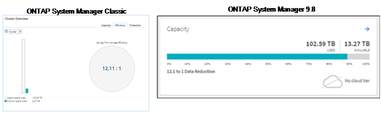
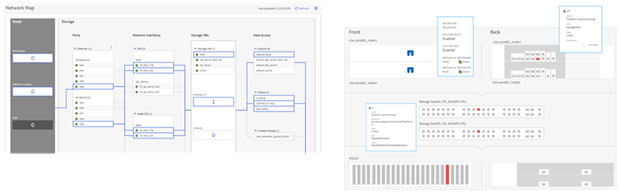

Richiedi modifiche alla documentazione
Richiedi modifiche alla documentazione Modifica questa pagina
Modifica questa pagina Scopri come collaborare
Scopri come collaborareMiglioramenti alla semplicità
Collaboratori
In questa sezione vengono descritti i miglioramenti apportati a ONTAP 9.8 che migliorano la semplicità. Ciò include quanto segue:
-
Aggiornamenti di Gestore di sistema di ONTAP
-
Aggiornamenti ONTAP e aggiornamenti tecnologici
-
Miglioramenti delle API REST
Miglioramenti di System Manager
ONTAP 9.7 ha introdotto una nuova versione dell’interfaccia grafica di System Manager, con l’intento di semplificare il modo in cui gli amministratori gestiscono le operazioni di base di ONTAP, come il provisioning dello storage e le operazioni quotidiane. La nuova GUI sfrutta anche le API REST, aggiunte in ONTAP 9.6. In ONTAP 9.8, la vista classica di Gestore di sistema è stata rimossa.
Una delle principali differenze tra le interfacce è la dashboard, che è la prima pagina a cui si accede per la prima volta a NetApp ONTAP System Manager.
La seguente grafica mostra un confronto affiancato tra le versioni classiche e nuove della dashboard di System Manager.

Se guardiamo più da vicino, possiamo osservare alcune differenze importanti.
Salute/Avvisi
Quando si accede per la prima volta a Classic System Manager, nell’angolo in alto a sinistra viene visualizzato un elenco di guasti al cluster e al nodo. Questi sono riepilogati in link selezionabili. Facendo clic su uno dei collegamenti, si viene reindirizzati a un’altra pagina in System Manager.
Si disponeva inoltre di un’area separata che mostra lo stato ha del cluster per verificare se un nodo ha eseguito il failover. Nelle immagini seguenti, vediamo la vista della dashboard e ciò che vediamo quando facciamo clic su uno dei link―in questo caso, i nostri dischi guasti.

Per visualizzare altri avvisi, è necessario tornare alla dashboard, che richiede tempo e clic aggiuntivi. Uno degli obiettivi della nuova vista di System Manager è semplificare questo processo.
La figura seguente mostra la nuova dashboard di System Manager. Le due principali differenze per le visualizzazioni di stato e avvisi sono che ora abbiamo lo stato ha del nodo e gli avvisi nella stessa finestra e, invece di fare clic lontano dalla dashboard principale, gli avvisi sono ora in una casella a discesa.

Visualizzazioni della capacità
Sono inoltre ridotti i clic aggiuntivi per le visualizzazioni della capacità. In Gestione di sistema ONTAP classico, i rapporti di capacità ed efficienza dello storage sono stati trovati in Panoramica del cluster e hanno avuto schede per fare clic per trovare informazioni. La nuova vista di System Manager consolida i rapporti di efficienza dello storage e le viste della capacità in un’unica immagine.

|
La nuova interfaccia utente sfrutta lo spazio logico utilizzato e lo spazio fisico disponibile. |

Le viste di protezione dei dati sono state spostate nella propria dashboard sotto protezione. Questa pagina offre un’analisi più dettagliata e granulare della protezione dei dati nel cluster e fornisce anche una posizione per sfruttare la nuova Business Continuity SnapMirror (SM-BC).

Visualizzazione di rete
Gestione di sistema di ONTAP 9.8 rimuove anche la vista applicazioni e oggetti a favore di una nuova vista di visualizzazione della rete che mostra la topologia di rete per il cluster, oltre alle X rosse quando una porta è inattiva.

Visualizzazioni delle performance
I grafici dei dati delle performance in System Manager conservano i dati del cluster fino a 1 anno, invece di avere i dati delle performance di System Manager classici, disponibili solo quando si è connessi. In Gestore di sistema di ONTAP 9.8, è ora possibile fare clic su ora, giorno, settimana, mese o anno. Esiste anche un modo per scaricare i dati delle performance in un CSV.

Analisi del file system
In ambienti con elevato numero di file, il tentativo di trovare informazioni sulla capacità delle cartelle, sull’età dei dati e sul numero di file in genere richiede comandi o script che eseguono operazioni seriali su protocolli NAS, ad esempio ls, du, find, e. stat.
Gestore di sistema ONTAP 9.8 consente agli amministratori di trovare rapidamente e facilmente informazioni sul file system in qualsiasi volume di storage NAS, attivando uno scanner a basso impatto per ciascun volume. Questo scanner esegue la ricerca del file system ONTAP in background con un lavoro a bassa priorità e fornisce numerose informazioni disponibili non appena si passa a un volume in Gestione sistema 9.8 o versioni successive.
L’abilitazione di file Systems Analytics è semplice quanto la navigazione verso il volume che si desidera sottoporre a scansione. Accedere a Storage > Volumes (Storage > volumi), quindi utilizzare la ricerca per trovare il volume desiderato. Fare clic sul volume, quindi sulla scheda Explorer.
Da qui, viene visualizzato il link Enable Analytics (attiva analisi) sul lato destro della pagina.

Dopo aver fatto clic su ENABLE (attiva), lo scanner si avvia. Il tempo di completamento dipende dal numero di oggetti nel volume e dal carico di sistema. Al termine, l’intera struttura di directory viene popolata nella vista System Manager. Questa vista può essere esplorata lungo la struttura delle directory e fornisce l’accesso alle informazioni sulla cronologia, sulle dimensioni della directory e sulle dimensioni dei file.
La figura seguente mostra le viste del volume Tech_ONTAP nel cluster, che utilizzo come archivio per "Podcast NetApp Tech OnTap".

Quando si fa clic su una cartella, viene visualizzato un elenco di file sul lato destro della pagina.

Se si sceglie, è possibile attivare l’opzione Mostra ora di accesso per visualizzare l’ultima volta in cui è stato effettuato l’accesso a un file.

Nella parte inferiore della pagina, è possibile visualizzare la quantità di dati a cui non è stato effettuato l’accesso in un anno, nonché il numero di directory e file contenuti in tale cartella.

Oltre a trovare rapidamente le dimensioni dei file e le informazioni sulle directory, questa funzionalità fornisce anche informazioni che possono aiutarti a decidere se la tecnologia NetApp FabricPool sarebbe efficace nel ridurre la quantità di dati cold che occupa spazio sui tuoi aggregati.
Client NFS attivi
ONTAP 9.7 ha introdotto un metodo per verificare quali client NFS accedevano a volumi specifici in un cluster e quali indirizzi IP LIF dei dati erano in uso con nfs connected-clients comando. Questo comando viene descritto in dettaglio in "TR-4067: Guida alle Best practice e all’implementazione di NetApp ONTAP NFS". Questo comando è utile per gli scenari in cui è necessario scoprire quali client sono collegati al sistema storage, come aggiornamenti, aggiornamenti tecnici o semplici report.
Gestione di sistema di ONTAP 9.8 offre un modo per visualizzare questi client con l’interfaccia grafica utente e un modo per esportare l’elenco in un file .csv. Accedere a hosts > NFS Clients (host > Client NFS) per visualizzare un elenco dei client NFS attivi nelle ultime 48 ore.

Altri miglioramenti di System Manager 9.8
ONTAP 9.8 offre inoltre i seguenti miglioramenti a Gestione sistema:
|
|
La figura seguente mostra gli aggiornamenti del firmware MetroCluster e con un solo clic.

Miglioramenti delle API REST
Il supporto delle API REST, aggiunto in ONTAP 9.6, consente agli amministratori dello storage di sfruttare le chiamate API standard di settore allo storage ONTAP nei propri script di automazione senza la necessità di interagire con l’interfaccia utente grafica o l’interfaccia grafica utente.
La documentazione e gli esempi delle API REST sono disponibili con System Manager. È sufficiente accedere all’interfaccia di gestione del cluster da un browser Web e aggiungere docs/api All’indirizzo (utilizzando HTTPS).
Ad esempio:
Questa pagina fornisce un glossario interattivo delle API REST disponibili, oltre a un metodo per generare le query REST API.

In ONTAP 9.8, le API REST sono ora annotate con quale versione sono state aggiunte, il che aiuta a semplificare la vita quando si tenta di mantenere gli script operativi in più versioni di ONTAP.

La tabella seguente fornisce un elenco delle nuove API REST in ONTAP 9.8.
Cluster * Cronologia firmware * licenze cluster – pool di capacità * licenze cluster – gestori di licenze * metriche dei nodi * Caricamento immagine software MetroCluster * Mediator * Diagnostica * Gestione/creazione * gruppi DR * interconnessioni * nodi * operazioni * rete* * metriche porta Ethernet * informazioni porta switch * Switch Informazioni * metriche dell’interfaccia FC * gruppi peer BGP * metriche dell’interfaccia IP * policy di servizio LIF * SAN * metriche NVMe |
Sicurezza * attivazione/disattivazione della modalità FIPS * attivazione/disattivazione della crittografia dei dati * Vaults delle chiavi Azure * Google GCP-KMS * IP sec * Storage* * copia/spostamento dei file * PATCH/modifica NetApp FlexCache® * file monitorati * politiche Snapshot * policy di efficienza dello storage * Gestione di file e directory (eliminazione asincrona, QoS e analisi dei file system) NAS * redirect del log di audit * sessioni CIFS * traccia di accesso al file/Security Gestisci * rimedio agli eventi Archivio oggetti/S3 * Gestione del bucket S3 * gruppi S3 * policy S3 |
Per ulteriori informazioni sugli aggiornamenti di Gestione sistema in ONTAP 9.8, vedere "Podcast Tech OnTap episodio 266: Gestore di sistema NetApp ONTAP 9.8".
Aggiornamenti e aggiornamenti tecnologici – ONTAP 9.8
Tradizionalmente, gli aggiornamenti di ONTAP dovevano avvenire entro una o due release principali per funzionare senza interruzioni. Per gli amministratori dello storage che non effettuano aggiornamenti frequenti, questo diventa un grave problema e un incubo logistico quando è finalmente giunto il momento di aggiornare ONTAP. Chi desidera aggiornare e riavviare più volte in una finestra di manutenzione?
ONTAP 9.8 supporta ora gli aggiornamenti alle release di ONTAP entro due anni. Ciò significa che se si desidera eseguire l’aggiornamento da 9.6 a 9.8, è possibile farlo direttamente senza dover passare a ONTAP 9.7.
La seguente tabella fornisce una matrice degli aggiornamenti della versione di NetApp ONTAP.
| Punto di partenza | Aggiornamento diretto a: |
|---|---|
ONTAP 9.6 |
ONTAP 9.7, ONTAP 9.8 |
ONTAP 9.7 |
ONTAP 9.8, ONTAP 9.n+2 |
ONTAP 9.8 |
ONTAP 9.n+1, ONTAP 9.n+2 |
Questo processo di aggiornamento semplificato offre anche un modo per semplificare gli aggiornamenti Head. Quando viene spedito un nuovo nodo hardware, viene installata la versione più recente di ONTAP. In precedenza, se il cluster esistente eseguiva una versione precedente di ONTAP, era necessario aggiornare i nodi esistenti alla stessa versione di ONTAP del nuovo nodo oppure eseguire il downgrade del nuovo nodo alla versione precedente di ONTAP. Inoltre, se non è stato possibile eseguire il downgrade dell’hardware più recente, è stato necessario eseguire una finestra di manutenzione per aggiornare il cluster esistente.
Con la finestra della versione mista di ONTAP 9.8 della durata di 2 anni, è ora possibile aggiungere nuovi nodi che eseguono le versioni più recenti di ONTAP in un cluster per consentire l’aggiornamento dei controller spostando i volumi dai nodi che eseguono 9.8 alle versioni superiori di ONTAP. Inoltre, il processo di aggiornamento senza interruzioni del trasferimento degli aggregati consente di aggiornare i controller dei sistemi che devono eseguire ONTAP 9.8 (ad esempio, i sistemi della serie 8000) ai modelli più recenti introdotti nelle versioni successive di ONTAP.
Si consiglia di limitare il tempo di funzionamento del cluster ONTAP in uno stato di versione mista.

Questo processo si estende anche agli aggiornamenti del cluster, dove si desidera sostituire un’intera coppia ha da un cluster. Grazie alla finestra di revisione di 2 anni di ONTAP 9.8 e agli spostamenti dei volumi senza interruzioni, questo è ora possibile.
Di seguito sono riportati i passaggi di base:
-
Connettere i nuovi sistemi a un cluster esistente, con le versioni di ONTAP entro 2 anni.
-
Utilizzare lo spostamento del volume senza interruzioni per svuotare i nodi.
-
Disunire i vecchi nodi dal cluster.